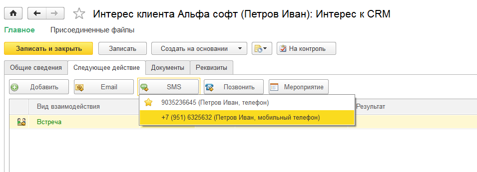

В решении "1С:CRM" есть возможность использовать каналы коммуникации: SMS сообщения и телефонные звонки. Ниже указаны настройки ,которые нужно выполнить в 1С:CRM. При этом предполагается, что само решение по интеграции с телефонией уже настроено и доступно на рабочем месте. Более подробную информацию можно найти на сайте решений 1С:CRM: http://1crm.ru/products/cti/
В решении 1С:CRM необходимо выполнить следующие настройки:
Для использования телефонных звонков нужно зайти в раздел «Настройки» - «Настройки системы» , выбрать команду «Интеграция с телефонией(СофтФон)».
Далее установить галку «Использовать сервис СофтФон» и выполнить команду «Перезаполнить регистр поиска по номерам». Также можно заполнить поля с кодом города и страны, которые по умолчанию будут подставляться при добавлении телефона.
Для использования системы записи телефонных переговоров необходимо установить галку «Система записи переговоров, настроенная на сервере Софтфона».
Для загрузки всей информации по звонкам от АТС необходимо установить галку «Использовать регламентное задание для загрузки истории звонков» и указать дату, начиная с которой необходимо загрузить историю звонков в 1С:CRM. История будет загружаться в документы Телефонный звонок. Также необходимо указать расписание регламентного задания для загрузки истории. Рекомендуется не более 5 минут для возможности получения оперативной информации по пропущенным звонкам от клиентов. Отдельно рекомендуется указать выделенного сотрудника ,который будет получать оповещения о пропущенных входящих звонках от клиентов для контроля их отзвона.
Теперь необходимо перейти в Персональные настройки пользователя: зайти в раздел «Настройки» - «Сервис» - открыть команду Персональные настройки пользователя.
В открывшейся форме на закладке «Настройки» в разделе «Настройки СофтФон» в поле «Использовать СофтФон» установить значение «Да», а в группе «Настройка действий при звонке(только для внешних звонков)» - выбрать действие подходящее для конкретного пользователя. Например, для менеджера по продажам указаны рекомендуемые настройки ниже:
Для использования SMS сообщений необходимо зайти в раздел «Настройки» - «Настройки системы», выбрать команду «Интеграция с телефонией(СофтФон)».
В открывшейся форме выбрать «Провайдера» (ниже будет приведен пример при использовании SMS4B), указать логин и пароль. Далее при использовании провайдера SMS4B необходимо нажать на кнопку «Открыть форму настроек работы с сервисом SMS4B».
В открывшейся форме настроек нужно нажать на кнопку «Подключиться к сервису SMS4B».
Если необходимо использовать регламентное задание, то установить галку «Использовать регламентное задание» и выбрать Пользователя в поле «Пользователь задания».
Настройки документа «SMS сообщение» можно также выполнить в этой форме.
Все настройки выполнены. Теперь в конфигурации можно использовать данные каналы коммуникации.
Использование каналов коммуникаций при работе с документом Интерес
SMS сообщение и телефонный звонок создаются из документа «Интерес».
Открываем документ «Интерес» из одного из доступных мест, например, с рабочего места «Мои продажи». В открывшейся форме документа на закладке «Следующее действие» выбираем команду «Позвонить» и телефон, на который требуется совершить звонок.
После завершения звонка в Интересе на закладке «Документы» автоматически появится документ «Телефонный звонок».
Если в Персональных настройках в разделе СофтФон, Действие при ответе на звонок выбрано «Открывать мастер регистрации обращений», то при поступлении входящего звонка от Клиента откроется форма принятия обращения в которой уже будет заполнен номер телефона, а при звонке от существующего клиента - вся информация по нему:

Прослушать запись телефонного разговора можно из документа «Телефонный звонок», нажав кнопку «Прослушать запись телефонного разговора».
Для создания «SMS сообщения» нужно в Интересе клиента на закладке «Следующее действие» нажать кнопку «Отправить SMS сообщение», выбрав нужный номер телефона.

В открывшейся форме текст сообщения можно набрать вручную или выбрать шаблон.
Для отправки SMS сообщения необходимо нажать кнопку «Отправить», после чего в Интересе на закладке «Документы» автоматически появится документ «SMS сообщение».